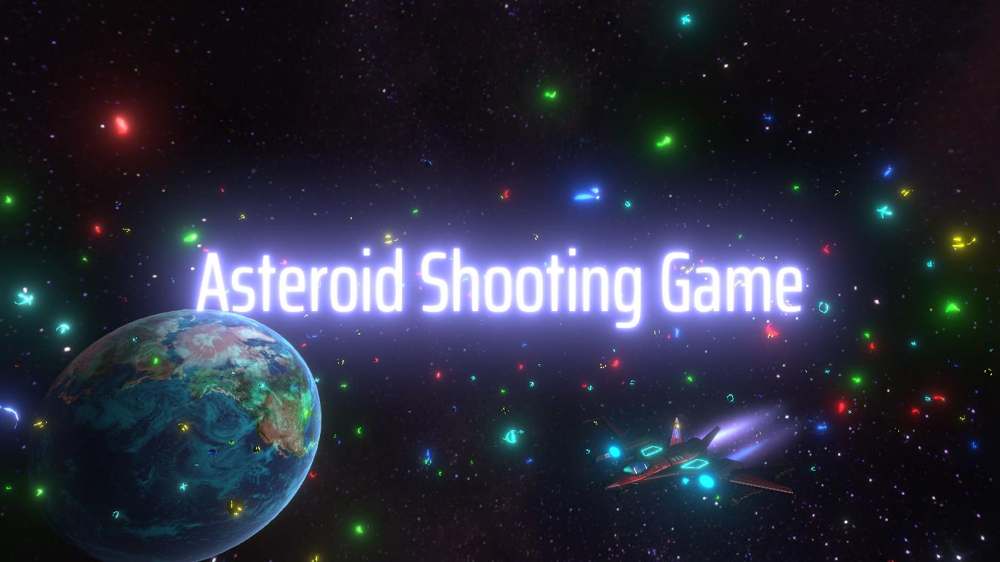
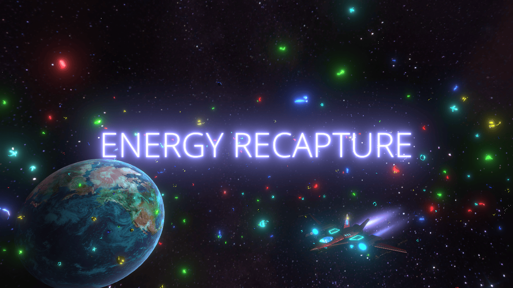
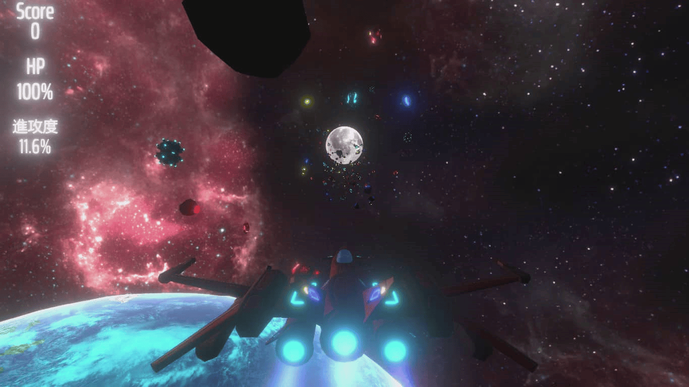
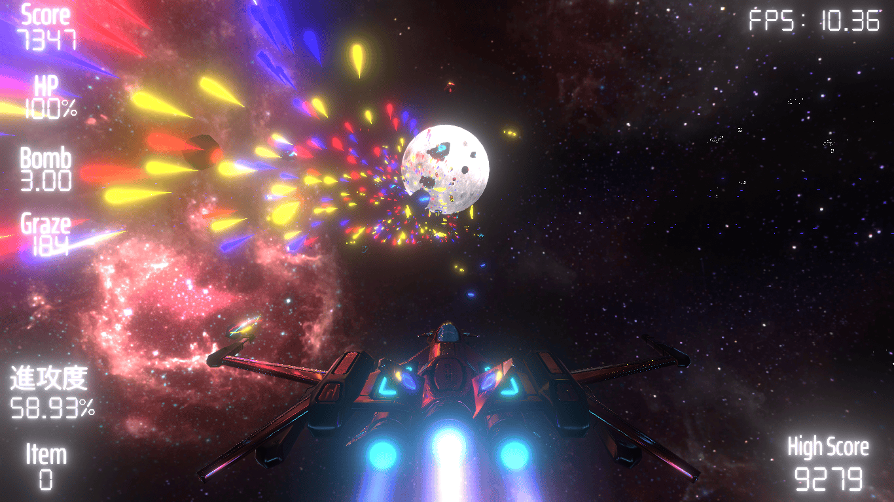

第二回(2025/05/06)
挨拶
皆さんお久しぶりです。TAMです。
第一回に書かれている通り、超不定期投稿です(1年4ヶ月ぶり)
この1年間でゲーム制作がどれだけ進んだかを書きたいと思います。
ゲーム制作の進捗
ゲームの名前
前はAsteroidShootingGameという仮の名前でしたが、
EnergyRecptureという名前に決定しました。エネルギーリキャプチャーと読みます。
やはり、Asteroid(小惑星)をShooting(射撃)するというだけでは、ゲームの内容が伝わらないので名前を変えました。
ゲームの内容
起動直後の画面です。これは1年以上たってもほぼ変わりがないです。
第一ステージの画面です。UIの表示項目が増え、小惑星だけだったものが、
敵の宇宙船から弾幕が出ていることで難易度とゲーム性が一気に高くなった感じです。
Before
After
Before
After
あとがき
気が向いたときにしか作ってきてなかったのでとても更新が遅くなりました。
もうちょっと積極的に作るようにしたいです。